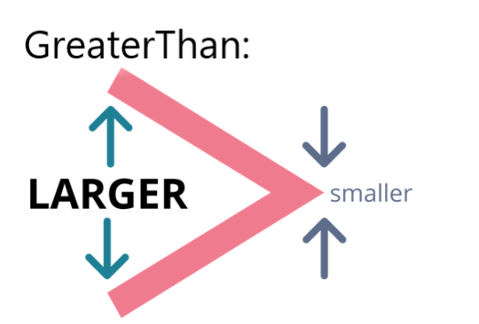
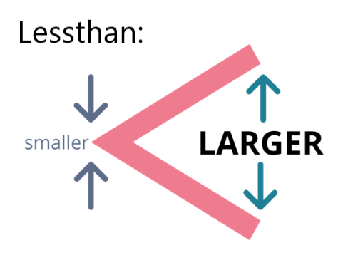
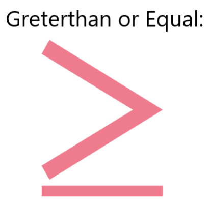
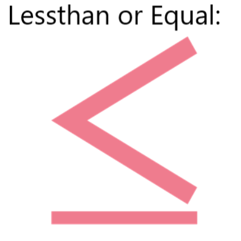

Mathematical Inequalities
Definition : Mathematical inequalities are like comparing numbers with signs, showing if one number is bigger, smaller, or equal to another.

==>Greater than is one of the inequalities used when a quantity is larger or bigger than the other
quantity or quantities. The figure below shows the symbol used to denote greater than.

==>When the first value stated is smaller than the second value, we use the term less than. Less than is used to show the relationship between a smaller and larger value. The symbol used to represent less than is shown in the figure below.

==>When the first value stated is smaller than the second value, we use the term less than. Less than is used to show the relationship between a smaller and larger value. The symbol used to represent less than is shown in the figure below.

==>As the name suggests, less than or equal to means that a variable is either less than or equal to the other number, expression, or term. Using the terms 'at most', 'no more than', 'maximum of', and 'not exceeding' also means less than or equal to. Shown in the figure below is the symbol used to express less than or equal to. You can notice the line below the 'less than' symbol that makes it different from each other.